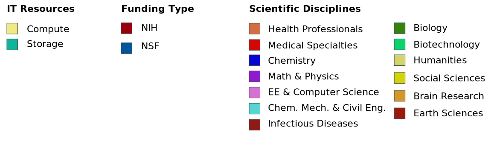

<DOCTYPE! html>

<head>
    <meta charset=UTF-8 />
    <link rel='shortcut icon' type='image/x-icon' href='images/favicon.ico' />
    <title>XDMoD Grant-Publication-Resource Connections</title>
    <script src="lib/angular/angular.js"></script>
    <script src="lib/head.js"></script>
    <script src="src/Init.js"></script>
</head>

<body>

<div class="sankey">
<!-- <style="overflow-y: scroll; height:1000px;"> -->
    <div class="container" id="container">
       <div ng-controller="ngCnsVisual"
               ng-vis-type="Sankey"
               id="sankey01"
               ng-data-field="sankeyData"
               ng-identifier="sankey01"
               ng-config="visuals/sankey01-configs.js">
        </div>
   <div class="legend-container legend">
    <button >
        <span>Legend</span>
    </button>
        <div class="legend-row">
            

        </div>
    </div>
</div>
</div>

</body>
<script>

 var legendToggleOff = true;
 setTimeout(function() {
    $(document).ready(function() {
        $(".legend-container").click(function() {
            toggleLegend();
        });
    });
}, 2000)

 function toggleLegend() {
    if (legendToggleOff) {
        $(".legend-container").animate({
            bottom: '0px'
        }, 20);
        legendToggleOff = false;
    } else {
        $(".legend-container").animate({
            bottom: '-280px'
        }, 75);
        legendToggleOff = true;
    }

}
</script>
</html>
